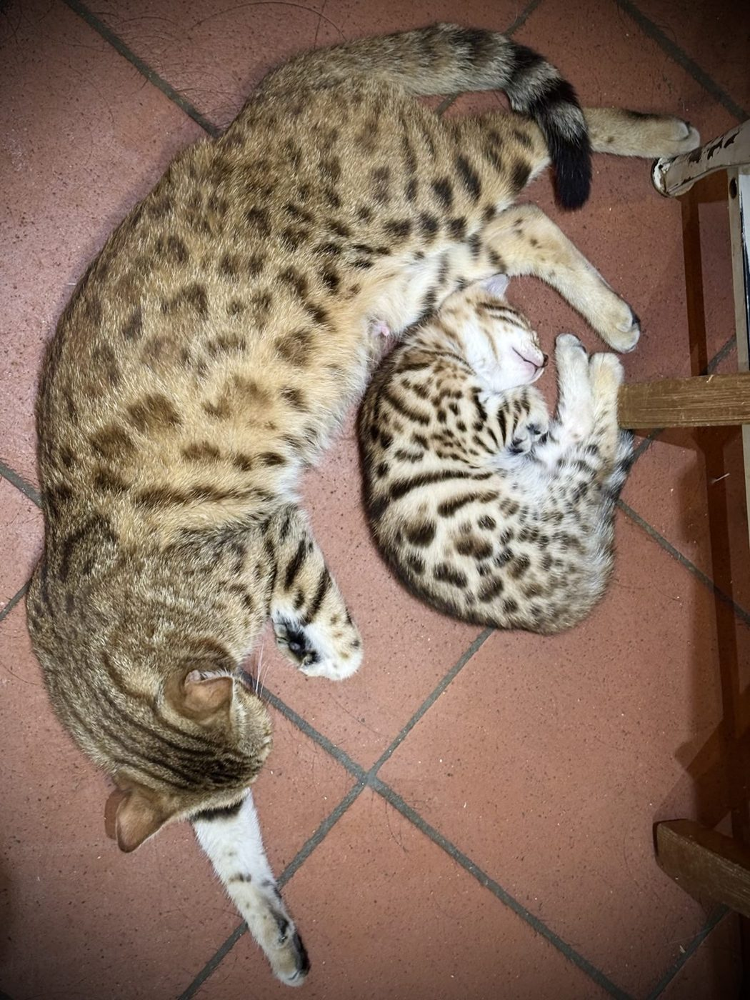
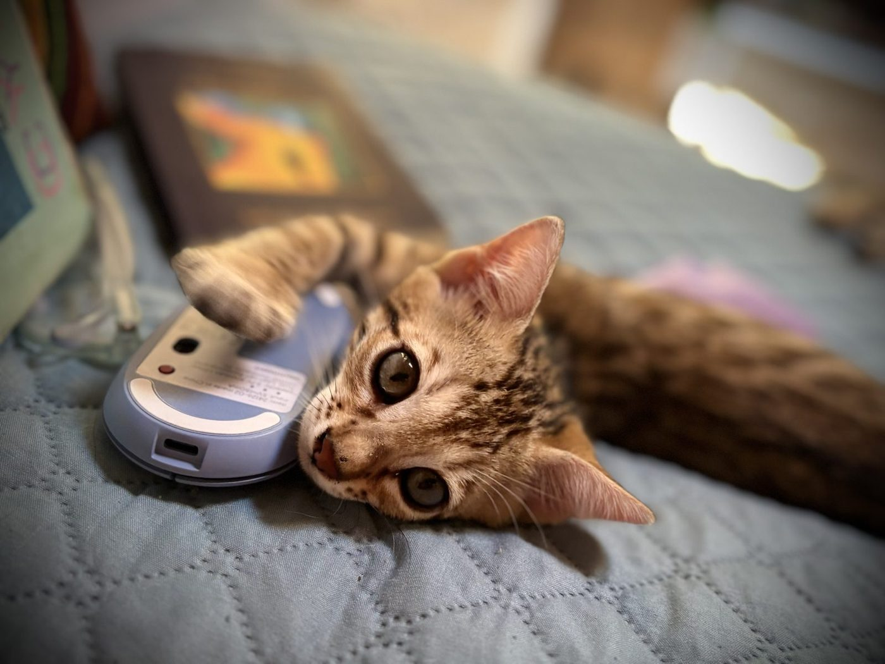
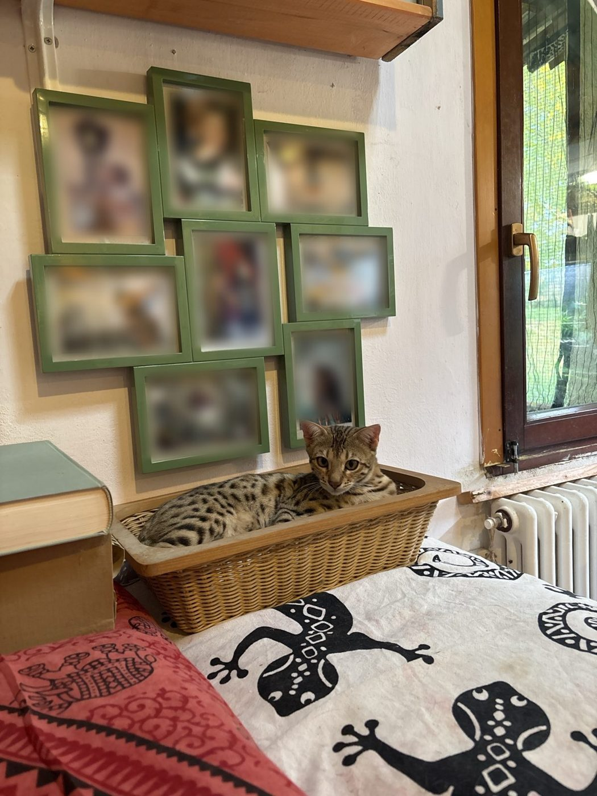
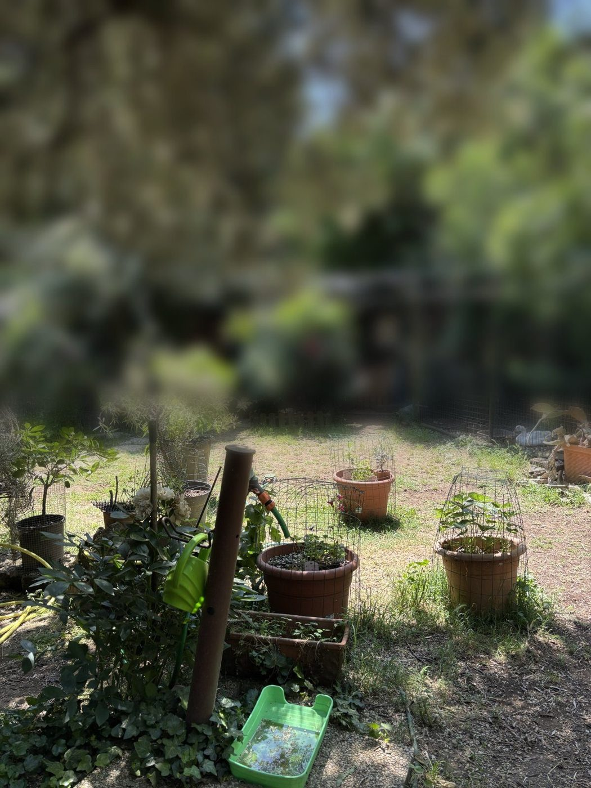

L'allevamento
Salute, benessere, aspetto e carattere
Siamo Veronica e Tania, due socie veterinarie con una passione in comune: il gatto di razza Bengala. Dal 2013 allevamo questo gatto meraviglioso dall'aspetto selvaggio, intelligente e giocherellone.
La casa
Dove vivono i nostri gatti
I gatti vivono alla periferia di Bologna, a casa di Veronica. Accanto alla casa abbiamo creato uno spazio esterno in sicurezza, con quattro casette in legno e un ampio giardino chiuso: così, mentre mamme e piccoli vivono in casa, i papà non restano mai del tutto separati.
Intorno alle 10 settimane i gattini escono all'aperto in sicurezza, in aree comunicanti con la casa, dove socializzano anche con gli altri animali: cani, oche, galline e galli canterini!
Dal 1° settembre 2023 tutto il giardino intorno alla casa è messo in sicurezza. I gatti hanno a disposizione 150 m² di giardino più la casa, e possono entrare e uscire in totale autonomia da una gattaiola sempre aperta.






Salute
Controlli e prevenzione
Tutti i nostri gatti sono testati per PK-def e PRA-b e fanno ecocardiogrammi periodici per controllare il cuore.
Facciamo inoltre test periodici per parassiti e virus intestinali: Giardia, Tritrichomonas, Coronavirus, toxoplasmosi e Salmonella.
Con una veterinaria in casa 24 ore su 24 e un'altra al Centro Veterinario Anzola, ogni gatto è seguito da vicino. I risultati dei test di ogni riproduttore sono consultabili nella sua scheda.
Alimentazione
Una nutrizionista veterinaria
Una nutrizionista veterinaria segue la dieta dei nostri gatti, perché siamo convinte che salute e benessere dipendano anche da quello che mangiano ogni giorno.
- Dieta mista: crocchette senza cereali sempre a disposizione e due pasti di carne cruda (BARF) formulati dalla nutrizionista.
- Ogni tanto prede intere o bocconi da masticare, per soddisfare il bisogno di mordere e giocare.
- La dieta cambia con l'età e la fase di vita: crescita, gravidanza, allattamento, età adulta.
- Alla nuova famiglia diamo indicazioni complete, sia per il cibo fresco sia per marche commerciali complete.
Benessere
Una casa a misura di gatto
Casa e spazi esterni sono pensati per loro: tiragraffi ovunque, percorsi a parete, punti di ristoro e di riposo sempre accessibili a tutti. Circa ogni sei mesi cambiamo qualcosa per rendere l'ambiente sempre interessante e vario.
Non mancano una fontanella, scatole e giochi sempre alternati. Periodicamente viene a trovarci una collega veterinaria comportamentalista, che ci dà spunti e consigli per migliorare l'ambiente.
Le nostre regole
Come da norme FIFe
- Le gatte non si accoppiano mai prima dei 10 mesi e non fanno più di tre cucciolate in tre anni.
- Salvo rarissime eccezioni, tutti i gatti vengono sterilizzati entro i cinque anni o dopo al massimo quattro cucciolate.
- Quando possibile, se non restano con noi, le mamme sterilizzate trovano casa insieme a uno dei loro piccoli.
Come crescono i gattini
Dalla nascita alla prima uscita
- Nascono e crescono in casa, in una zona tranquilla lontana dai rumori.
- Vengono manipolati, pesati e controllati ogni giorno fin dalla nascita.
- Stimoliamo tatto e olfatto, poi vista e udito, con giochi e materiali diversi.
- Lo svezzamento è naturale: è la mamma a insegnare loro a mangiare.
- Verso i due mesi scoprono l'area esterna, sempre con la mamma.
Carattere
Un elemento chiave della nostra selezione
Il Bengala è un gatto curioso, intelligente, attivo e interattivo. Ama la compagnia e il contatto fisico, ma solo quando lo decide lui. Adora "parlare" con le persone e con gli altri animali di casa e ama tanto l'acqua. La sua indole curiosa lo rende adatto anche a passeggiate al guinzaglio, in luoghi sicuri e non frequentati da cani.
Le mamme troppo apprensive o paurose vengono sterilizzate e restano gatte "da divano"; se non amano la compagnia degli altri gatti trovano casa, preferibilmente da amici o da chi ha già un nostro gatto. Lo stesso vale per i maschi che soffrono la vita del gatto intero.
La priorità è che siano sereni e contenti.
La razza
Il Bengala fa per te?
Attivo e curioso
Ama giocare, arrampicarsi ed esplorare. Ha bisogno di tempo, giochi e spazi in verticale, come tiragraffi alti e mensole.
Molto legato alla famiglia
È un gatto socievole che cerca la compagnia delle persone e spesso va d'accordo con altri animali, se abituato.
Aspetto selvatico
Mantello corto e lucido, maculato o marmorizzato, che richiede pochissima toelettatura.
Non sai se è la razza giusta per te? Chiamaci: preferiamo una chiacchierata in più a una scelta affrettata.
Hai trovato il Bengala che cercavi?
Raccontaci di te: ti rispondiamo tutti i giorni, indicativamente dalle 10 alle 18.